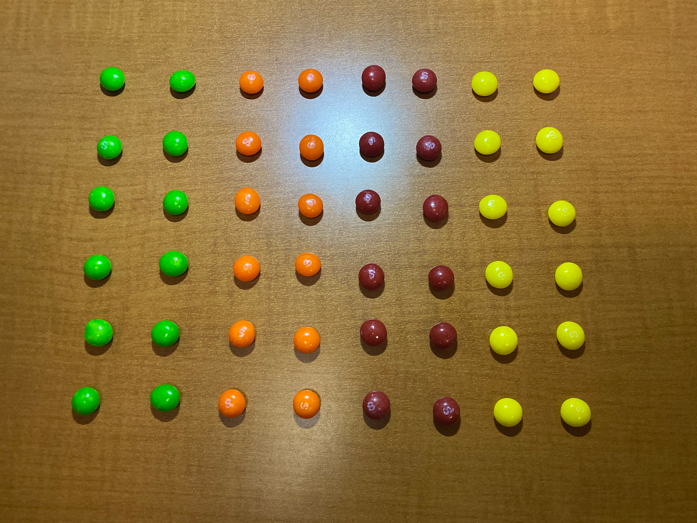

The Six Principles of Good Design and the 4 Laws of Gestalt Theory
Unity
Unity is the most abstract of the 6 principles. Unity is the idea that all aspects of the media should work together. The example that the book gave was how you would not wear cargo shorts and flip-flops with a tuxedo. All of the work should relate to each other to form a cohesive design or message.
IPhone
Notice how all the cadets in uniform show a sense of unity and togetherness.
DSLR

This simple layout of skittles is a good demonstration of unity.All of the skittles are lined up in neat rows and are categorized by color. If there was a random snickers bar in the middle of the image, the image would look wrong and not unified.